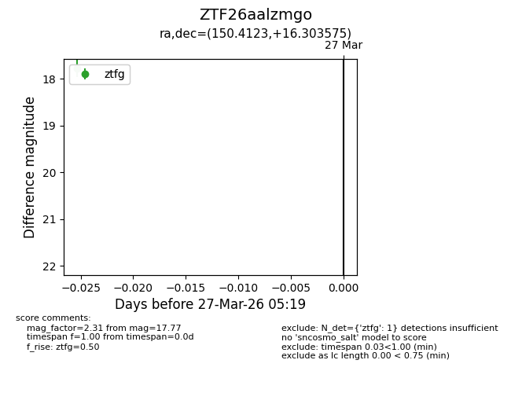
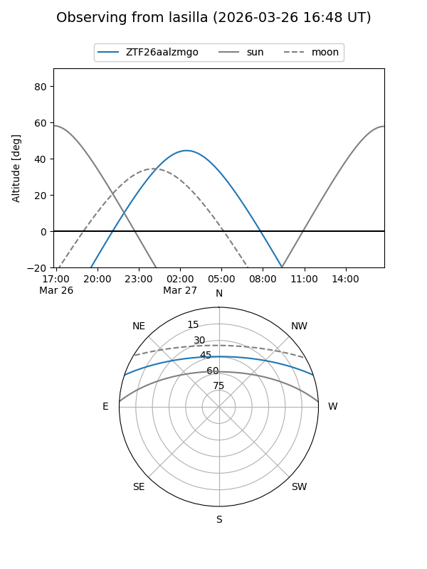
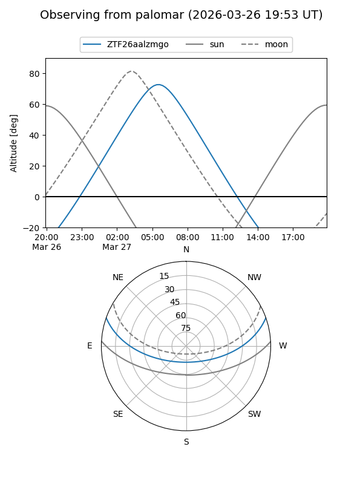

ZTF26aalzmgo
Target ZTF26aalzmgo at 2026-03-27 05:22
Aliases and brokers:
FINK: link
Lasair: link
ALeRCE: link
alt names
ZTF26aalzmgo (ztf,fink_ztf)
Coordinates:
equatorial (ra, dec) = 150.4123,+16.30357
equatorial (HMS+DMS) = 10:01:38.94,+16:18:12.87
galactic (l, b) = (219.3701,+49.31633)
Flags:
Photometry:
last ztfg=17.77
1 ztfg detections
Lightcurve

Visibility


Additional plots